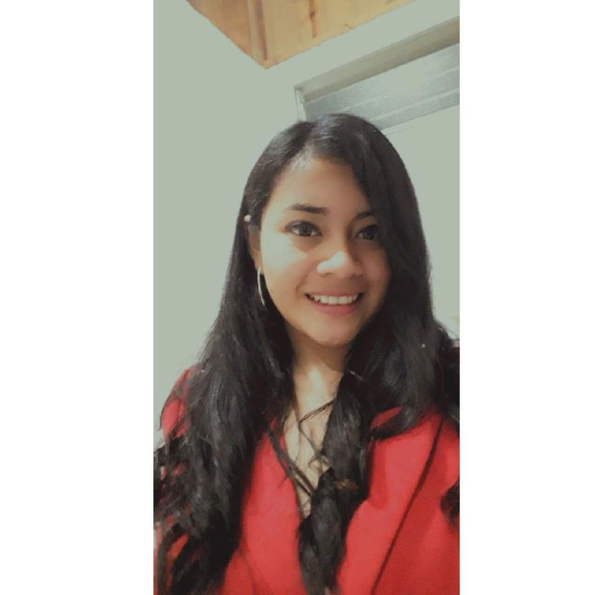

Hola mi nombre es
Sandra Leticia Tiney Sisay
Soy desarrolladora fullstack junior
Soy desarrolladora de fullstack especializada en fron-end en CSS puro. Me gusta desarrollar páginas web interactivas, sólidas y escalables y estoy enfocada en seguir aprendiendo y profundizando mis conocimientos para mayor interactividad en las páginas, futuramente con JS incluido para mayor dinamismo.
Que es un desarrolador fullstack
